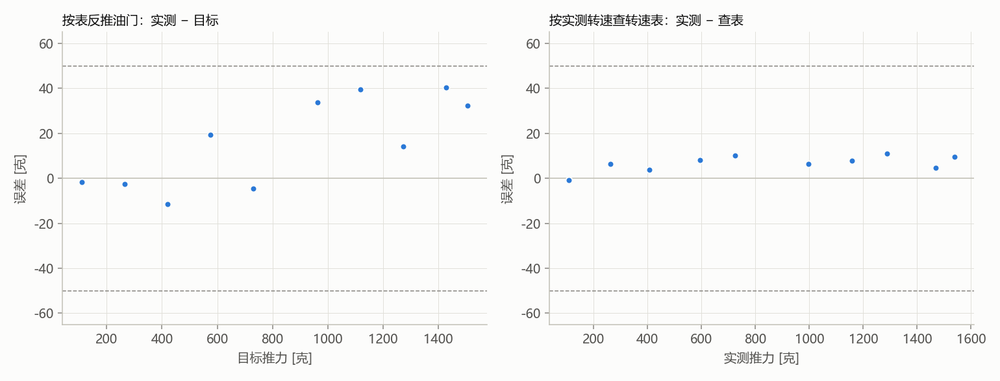

10 个目标实测完成，跳过 0 个；按表反推：平均误差 20 克，最大 40 克，10/10 个在 ±50 克内。按实测转速查转速表：平均误差 7 克，最大 11 克。停止原因：completed。表：c493194dbb35。

| 序号 | 目标 [克] | 油门 [%] | 电量 [V] | 实测 [克] | 误差 [克] | 转速表查值 [克] | 转速表误差 [克] | 备注 |
|---|---|---|---|---|---|---|---|---|
| 1 | 575 | 45.7 | 12.27 | 594 | 19 | 586 | 8 | |
| 2 | 1274 | 78.3 | 12.32 | 1288 | 14 | 1277 | 11 | |
| 3 | 264 | 27.6 | 12.42 | 262 | -2 | 255 | 6 | |
| 4 | 963 | 65.4 | 12.18 | 997 | 34 | 990 | 6 | |
| 5 | 1507 | 91.2 | 12.29 | 1539 | 32 | 1530 | 9 | |
| 6 | 419 | 36.7 | 12.38 | 408 | -11 | 404 | 4 | |
| 7 | 1118 | 73.5 | 12.13 | 1158 | 40 | 1150 | 8 | |
| 8 | 730 | 53.1 | 12.29 | 726 | -4 | 715 | 10 | |
| 9 | 1429 | 88.3 | 12.18 | 1469 | 40 | 1465 | 5 | |
| 10 | 109 | 16.4 | 12.29 | 107 | -2 | 108 | -1 |